| 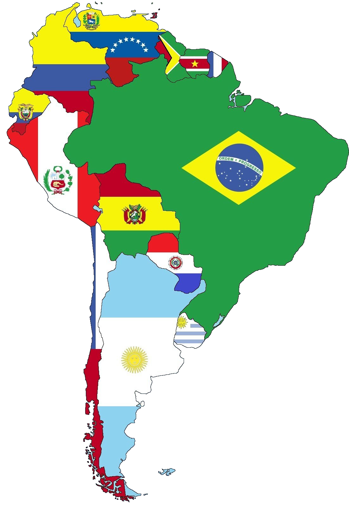 |
| Argentina | |||
| 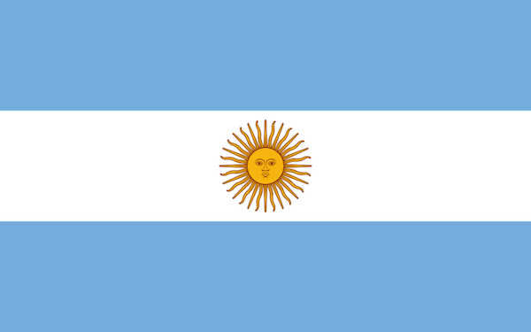 | |||
| Superficie: | 2,78 millones km² | ||
| Moneda: | Peso argentino | ||
| Población: | 43,85 millones | ||
| Capital: | Buenos Aires | ||
| Idioma: | Español | ||
| Provincias | Capitales |
| Buenos Aires | La Plata |
| Cordoba | Cordoba |
| Entre Rios | Parana |
| Santa Fé | Santa Fé |
| Corrientes | Corrientes |
| Misiones | Posadas |
| Chaco | Resistencia |
| Formosa | Formosa |
| La Pampa | Sta. Rosa |
| Ver más... | Volver |
| Brasil | |||
| 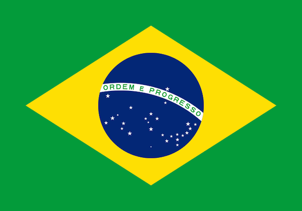 | Superficie: | 8,516 millones km² | |
| Moneda: | Real | ||
| Población: | 207,7 millones | ||
| Capital: | Brasilia | ||
| Idioma: | Portugues | ||
| Estados | Capitales |
| Rio Grande do Sul | Porto Alegre |
| Santa Catarina | Florianopolis |
| Parana | Curitiva |
| Sao Paulo | Sao Paulo |
| Rio de Janeiro | Rio de Janeiro |
| Minas Gerais | Belo Horizonte |
| Espinto Santo | Vitoria |
| Bahia | Salvador |
| Pernambuco | Recife |
| Ver más... | Volver |
| Uruguay | |||
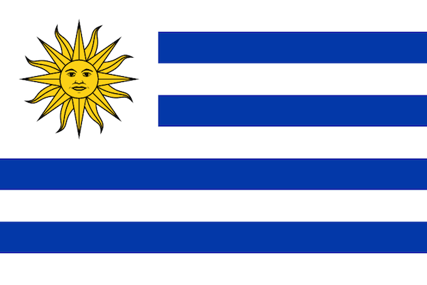 |
Superficie: | 176.215 km² | |
| Moneda: | Peso Uruguayo | ||
| Población: | 3,444 millones | ||
| Capital: | Montevideo | ||
| Idioma: | Español | ||
| Departamentos | Capitales |
| Artigas | Artigas |
| Canelones | Canelones |
| Cerro Largo | Melo |
| Colonia | Colonia del Sacramento |
| Durazno | Durazno |
| Flores | Trinidad |
| Florida | Florida |
| Lavalleja | Minas |
| Maldonado | Maldonado |
| Ver más... | Volver |
| Chile | |||
| 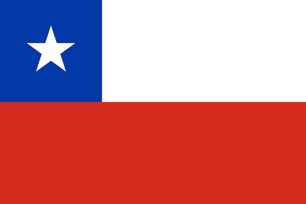 | Superficie: | 756.102 km² | |
| Moneda: | Peso Chileno | ||
| Población: | 17,91 millones | ||
| Capital: | Santiago de Chile | ||
| Idioma: | Español | ||
| Regiones | Capitales |
| Tarapacá | Iquique |
| Antofagasta | Antofagasta |
| Atacama | Copiapó |
| Coquimbo | La Serena |
| Valparaiso | Valparaiso |
| O’Higgins | Rancagua |
| Maule | Talca |
| Bío-Bío | Concepción |
| La Araucanía | Temuco |
| Ver más... | Volver |
| Bolivia | |||
| 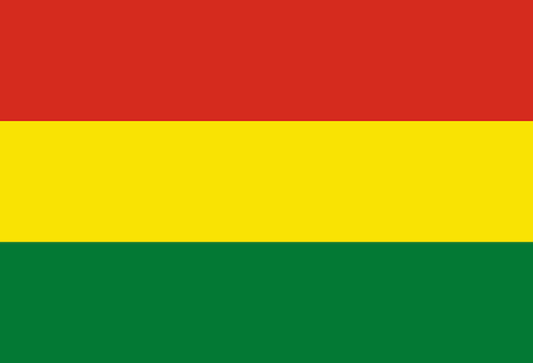 | Superficie: | 1,099 millones km² | |
| Moneda: | Peso Boliviano | ||
| Población: | 10,89 millones | ||
| Capital: | La Paz | ||
| Idioma: | Español | ||
| Estados | Capitales |
| Beni | Trinidad |
| Chuquisaca | Sucre |
| Cochabamba | Cochabamba |
| La Paz | Nuestra señora de La Paz |
| Oruro | Oruro |
| Pando | Cobija |
| Potosí | Potosí |
| Santa Cruz | Santa Cruz de la Sierra |
| Tarija | Tarija |
| Ver más... | Volver |
| Paraguay | |||
| 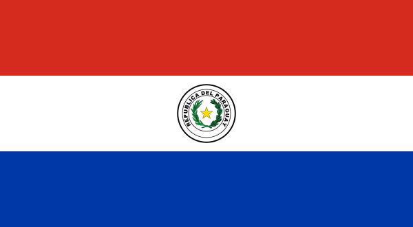 | Superficie: | 406.752 km² | |
| Moneda: | Guaraní | ||
| Población: | 6,725 millones | ||
| Capital: | Asunción | ||
| Idioma: | Español, Guaraní | ||
| Estados | Capitales |
| Canindeyú | Salto del Guairá |
| Presidente Hayes | Villa Hayes |
| Boquerón | Filadelfia |
| Alto Paraguay | Fuerte Olímpo |
| Asunción | Asunción |
| Concepción | Concepción |
| Cordillera | Caacupé |
| Guairá | Santa Cruz de la Sierra |
| Tarija | Tarija |
| Ver más... | Volver |
| Perú | |||
| 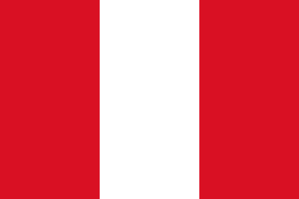 | Superficie: | 1,285 millones km² | |
| Moneda: | Sol Peruano | ||
| Población: | 31,77 millones | ||
| Capital: | Lima | ||
| Idioma: | Español | ||
Departamentos Capitales Amazonas Chachapoyas Áncash Huaraz Apurímac Abancay Arequipa Arequipa Ayacucho Ayacucho Cajamarca Cajamarca Cusco Cusco Huancavelica Huancavelica Huánuco Huánuco Ver más... Volver
| Ecuador | |||
| 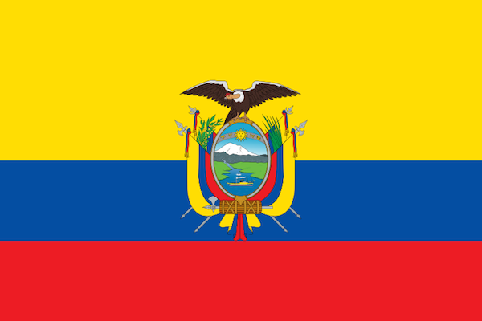 | Superficie: | 283.560 km² | |
| Moneda: | Dolar Estadounidense | ||
| Población: | 16,39 millones | ||
| Capital: | Quito | ||
| Idioma: | Español | ||
| Provincias | Capitales |
| Azuay | Cuenca |
| Bolívar | Guaranda |
| Cañar | Azogues |
| Carchi | Tulcán |
| Chimborazo | Riobamba |
| Cotopaxi | Latacunga |
| El Oro | Machala |
| Esmeraldas | Esmeraldas |
| Galápagos | Puerto Baquerizo Moreno |
| Ver más... | Volver |
| Colombia | |||
| 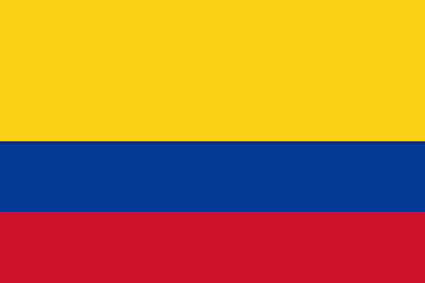 | Superficie: | 1,142 millones km² | |
| Moneda: | Peso Colombiano | ||
| Población: | 48,65 millones | ||
| Capital: | Bógota | ||
| Idioma: | Español | ||
Provincias Capitales Amazonas Leticia Antioquia Medellín Arauca Arauca Atlántico Barranquilla Bolívar Cartagena de Indias Boyacá Tunja Caldas Manizales Caquetá Florencia Casanare Yopal Ver más... Volver
| Venezuela | |||
| 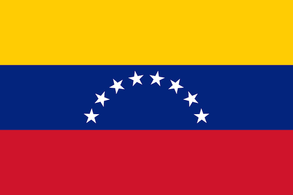 | Superficie: | 916.445 km² | |
| Moneda: | Bolívar Venezolano | ||
| Población: | 31,57 millones | ||
| Capital: | Caracas | ||
| Idioma: | Español | ||
Provincias Capitales Amazonas Puerto Ayacucho Anzoátegui Barcelona Apure San Fernando de Apure Aragua Maracay Barinas Barinas Bolívar Ciudad de Bolívar Carabobo Valencia Cojedes San Carlos Delta Amacuro Tucupita Ver más... Volver